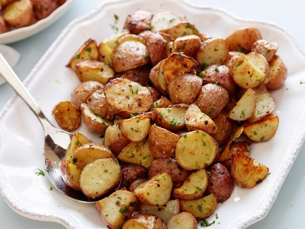

Ovnsbakte poteter
25min
Lettvint og enkel lunsj

Ingredienser til 1 tallerken
- 500g amadine poteter
- 5 stk hvitløktfedd
- 50ml matfløte
- dill
- salt
- pepper
- paprika
- parmesan
- olivenolje
Slik lager du ovnsbakte poteter
- Vask henda og sett ovnen på 220 grader
- Skjær opp potetene i biter og hvitløktfedd i tynne biter
- Legg potetene i en skål og tilsett olivenolje og krydder
- Bland alt godt sammen
- Spre potetene utover et stekebrett på bakepapir
- Stek potetene minst 15min i ovnen
- Server til slutt gjerne med revet parmasan og ketchup